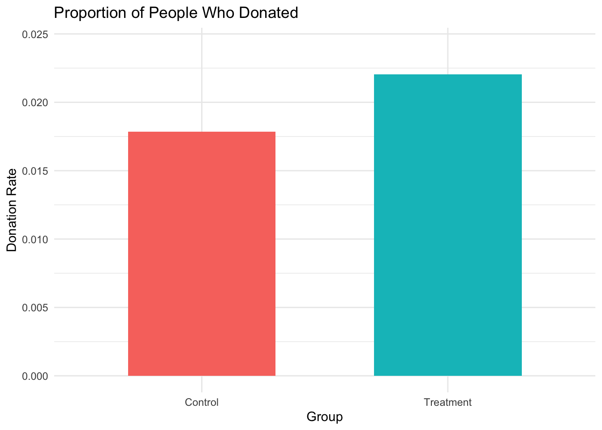

Dean Karlan at Yale and John List at the University of Chicago conducted a field experiment to test the effectiveness of different fundraising letters. They sent out 50,000 fundraising letters to potential donors, randomly assigning each letter to one of three treatments: a standard letter, a matching grant letter, or a challenge grant letter. They published the results of this experiment in the American Economic Review in 2007. The article and supporting data are available from the AEA website and from Innovations for Poverty Action as part of Harvard’s Dataverse.
To briefly summarize the design: 50,083 past donors were randomly assigned to one of two groups—a control group (which received a standard appeal) and a treatment group (which received a matching offer). Within the treatment group, donors were further randomly assigned to one of several specific conditions: - Match ratios: 1:1, 2:1, or 3:1 (e.g., a $50 donation with a 2:1 match results in $150 total) - Match thresholds: limits of $25,000, $50,000, $100,000, or no cap - Suggested donation amounts: equal to, 1.25×, or 1.5× the donor’s previous maximum gift
The core message and layout of each letter remained the same—only the matching and suggestion elements varied. The goal was to test how these subtle framing differences affected both whether people chose to donate and how much they gave.
In this project, I replicate their study using the original dataset, examining both the balance across groups and the causal impact of different treatments on giving behavior.
Data
Description
library(haven) library(dplyr)
Attaching package: 'dplyr'
The following objects are masked from 'package:stats':
filter, lag
The following objects are masked from 'package:base':
intersect, setdiff, setequal, union
library(ggplot2)
The dataset includes 50,083 observations and 51 variables. Each row corresponds to a past donor who was randomly assigned to receive one of several fundraising letters as part of Karlan and List’s experiment.
Below is a preview of the first 10 rows:
data <-read_dta("karlan_list_2007.dta")head(data, 10)
treatment control ratio ratio2
Min. :0.0000 Min. :0.0000 Min. :0.000 Min. :0.0000
1st Qu.:0.0000 1st Qu.:0.0000 1st Qu.:0.000 1st Qu.:0.0000
Median :1.0000 Median :0.0000 Median :1.000 Median :0.0000
Mean :0.6668 Mean :0.3332 Mean :1.334 Mean :0.2223
3rd Qu.:1.0000 3rd Qu.:1.0000 3rd Qu.:2.000 3rd Qu.:0.0000
Max. :1.0000 Max. :1.0000 Max. :3.000 Max. :1.0000
ratio3 size size25 size50
Min. :0.0000 Min. :0.000 Min. :0.0000 Min. :0.0000
1st Qu.:0.0000 1st Qu.:0.000 1st Qu.:0.0000 1st Qu.:0.0000
Median :0.0000 Median :2.000 Median :0.0000 Median :0.0000
Mean :0.2222 Mean :1.667 Mean :0.1667 Mean :0.1666
3rd Qu.:0.0000 3rd Qu.:3.000 3rd Qu.:0.0000 3rd Qu.:0.0000
Max. :1.0000 Max. :4.000 Max. :1.0000 Max. :1.0000
size100 sizeno ask askd1
Min. :0.0000 Min. :0.0000 Min. :0.000 Min. :0.0000
1st Qu.:0.0000 1st Qu.:0.0000 1st Qu.:0.000 1st Qu.:0.0000
Median :0.0000 Median :0.0000 Median :1.000 Median :0.0000
Mean :0.1667 Mean :0.1667 Mean :1.334 Mean :0.2223
3rd Qu.:0.0000 3rd Qu.:0.0000 3rd Qu.:2.000 3rd Qu.:0.0000
Max. :1.0000 Max. :1.0000 Max. :3.000 Max. :1.0000
askd2 askd3 ask1 ask2
Min. :0.0000 Min. :0.0000 Min. : 25.0 Min. : 35.00
1st Qu.:0.0000 1st Qu.:0.0000 1st Qu.: 35.0 1st Qu.: 45.00
Median :0.0000 Median :0.0000 Median : 45.0 Median : 60.00
Mean :0.2223 Mean :0.2222 Mean : 71.5 Mean : 91.79
3rd Qu.:0.0000 3rd Qu.:0.0000 3rd Qu.: 65.0 3rd Qu.: 85.00
Max. :1.0000 Max. :1.0000 Max. :1500.0 Max. :1875.00
ask3 amount gave amountchange
Min. : 50 Min. : 0.0000 Min. :0.00000 Min. :-200412.12
1st Qu.: 55 1st Qu.: 0.0000 1st Qu.:0.00000 1st Qu.: -50.00
Median : 70 Median : 0.0000 Median :0.00000 Median : -30.00
Mean : 111 Mean : 0.9157 Mean :0.02065 Mean : -52.67
3rd Qu.: 100 3rd Qu.: 0.0000 3rd Qu.:0.00000 3rd Qu.: -25.00
Max. :2250 Max. :400.0000 Max. :1.00000 Max. : 275.00
hpa ltmedmra freq years
Min. : 0.00 Min. :0.0000 Min. : 0.000 Min. : 0.000
1st Qu.: 30.00 1st Qu.:0.0000 1st Qu.: 2.000 1st Qu.: 2.000
Median : 45.00 Median :0.0000 Median : 4.000 Median : 5.000
Mean : 59.38 Mean :0.4937 Mean : 8.039 Mean : 6.098
3rd Qu.: 60.00 3rd Qu.:1.0000 3rd Qu.: 10.000 3rd Qu.: 9.000
Max. :1000.00 Max. :1.0000 Max. :218.000 Max. :95.000
NA's :1
year5 mrm2 dormant female
Min. :0.0000 Min. : 0.00 Min. :0.0000 Min. :0.0000
1st Qu.:0.0000 1st Qu.: 4.00 1st Qu.:0.0000 1st Qu.:0.0000
Median :1.0000 Median : 8.00 Median :1.0000 Median :0.0000
Mean :0.5088 Mean : 13.01 Mean :0.5235 Mean :0.2777
3rd Qu.:1.0000 3rd Qu.: 19.00 3rd Qu.:1.0000 3rd Qu.:1.0000
Max. :1.0000 Max. :168.00 Max. :1.0000 Max. :1.0000
NA's :1 NA's :1111
couple state50one nonlit cases
Min. :0.0000 Min. :0.0000000 Min. :0.000 Min. :0.0
1st Qu.:0.0000 1st Qu.:0.0000000 1st Qu.:1.000 1st Qu.:1.0
Median :0.0000 Median :0.0000000 Median :3.000 Median :1.0
Mean :0.0919 Mean :0.0009983 Mean :2.474 Mean :1.5
3rd Qu.:0.0000 3rd Qu.:0.0000000 3rd Qu.:4.000 3rd Qu.:2.0
Max. :1.0000 Max. :1.0000000 Max. :6.000 Max. :4.0
NA's :1148 NA's :452 NA's :452
statecnt stateresponse stateresponset stateresponsec
Min. : 0.001995 Min. :0.00000 Min. :0.00000 Min. :0.00000
1st Qu.: 1.833234 1st Qu.:0.01816 1st Qu.:0.01849 1st Qu.:0.01286
Median : 3.538799 Median :0.01971 Median :0.02170 Median :0.01988
Mean : 5.998820 Mean :0.02063 Mean :0.02199 Mean :0.01772
3rd Qu.: 9.607021 3rd Qu.:0.02305 3rd Qu.:0.02470 3rd Qu.:0.02081
Max. :17.368841 Max. :0.07692 Max. :0.11111 Max. :0.05263
NA's :3
stateresponsetminc perbush close25 red0
Min. :-0.047619 Min. :0.09091 Min. :0.0000 Min. :0.0000
1st Qu.:-0.001388 1st Qu.:0.44444 1st Qu.:0.0000 1st Qu.:0.0000
Median : 0.001779 Median :0.48485 Median :0.0000 Median :0.0000
Mean : 0.004273 Mean :0.48794 Mean :0.1857 Mean :0.4044
3rd Qu.: 0.010545 3rd Qu.:0.52525 3rd Qu.:0.0000 3rd Qu.:1.0000
Max. : 0.111111 Max. :0.73196 Max. :1.0000 Max. :1.0000
NA's :3 NA's :35 NA's :35 NA's :35
blue0 redcty bluecty pwhite
Min. :0.0000 Min. :0.0000 Min. :0.0000 Min. :0.0094
1st Qu.:0.0000 1st Qu.:0.0000 1st Qu.:0.0000 1st Qu.:0.7558
Median :1.0000 Median :1.0000 Median :0.0000 Median :0.8728
Mean :0.5956 Mean :0.5102 Mean :0.4887 Mean :0.8196
3rd Qu.:1.0000 3rd Qu.:1.0000 3rd Qu.:1.0000 3rd Qu.:0.9388
Max. :1.0000 Max. :1.0000 Max. :1.0000 Max. :1.0000
NA's :35 NA's :105 NA's :105 NA's :1866
pblack page18_39 ave_hh_sz median_hhincome
Min. :0.0000 Min. :0.0000 Min. :0.000 Min. : 5000
1st Qu.:0.0147 1st Qu.:0.2583 1st Qu.:2.210 1st Qu.: 39181
Median :0.0366 Median :0.3055 Median :2.440 Median : 50673
Mean :0.0867 Mean :0.3217 Mean :2.429 Mean : 54816
3rd Qu.:0.0909 3rd Qu.:0.3691 3rd Qu.:2.660 3rd Qu.: 66005
Max. :0.9896 Max. :0.9975 Max. :5.270 Max. :200001
NA's :2036 NA's :1866 NA's :1862 NA's :1874
powner psch_atlstba pop_propurban
Min. :0.0000 Min. :0.0000 Min. :0.0000
1st Qu.:0.5602 1st Qu.:0.2356 1st Qu.:0.8849
Median :0.7123 Median :0.3737 Median :1.0000
Mean :0.6694 Mean :0.3917 Mean :0.8720
3rd Qu.:0.8168 3rd Qu.:0.5300 3rd Qu.:1.0000
Max. :1.0000 Max. :1.0000 Max. :1.0000
NA's :1869 NA's :1868 NA's :1866
The dataset contains 50,083 observations, each representing a previous donor who received a fundraising solicitation as part of Karlan and List’s field experiment. The primary outcome variables include gave, indicating whether the person donated (mean = 0.0207), and amount, the dollar amount contributed (mean ≈ $0.92, conditional on giving). Most donors gave nothing, which is reflected by the median of $0.
Treatment conditions are encoded with variables such as: - treatment: whether the respondent received a matching offer (≈ 66.7% did) - ratio: numeric indicator of the match ratio (mean ≈ 1.33) - ratio2 and ratio3: dummy variables for 2:1 and 3:1 match ratios - size25, size50, size100, sizeno: match threshold treatment groups
Suggested donation levels are represented by ask, ask1, ask2, and ask3. Donor history is captured by variables such as freq (mean ≈ 8.04 prior donations), years (mean ≈ 6.10 years since first donation), and mrm2 (months since last donation, mean ≈ 13.0).
Demographic and geographic controls include gender (female: ≈ 27.8%), relationship status (couple: ≈ 9.1%), political environment (red0, blue0), and census-level data like median_hhincome and pwhite.
Most variables are binary indicators for treatment groups or demographics, and many are highly skewed, with means much lower than maximums.
Variable Definitions
Variable
Description
treatment
Treatment
control
Control
ratio
Match ratio
ratio2
2:1 match ratio
ratio3
3:1 match ratio
size
Match threshold
size25
$25,000 match threshold
size50
$50,000 match threshold
size100
$100,000 match threshold
sizeno
Unstated match threshold
ask
Suggested donation amount
askd1
Suggested donation was highest previous contribution
askd2
Suggested donation was 1.25 x highest previous contribution
askd3
Suggested donation was 1.50 x highest previous contribution
ask1
Highest previous contribution (for suggestion)
ask2
1.25 x highest previous contribution (for suggestion)
ask3
1.50 x highest previous contribution (for suggestion)
amount
Dollars given
gave
Gave anything
amountchange
Change in amount given
hpa
Highest previous contribution
ltmedmra
Small prior donor: last gift was less than median $35
freq
Number of prior donations
years
Number of years since initial donation
year5
At least 5 years since initial donation
mrm2
Number of months since last donation
dormant
Already donated in 2005
female
Female
couple
Couple
state50one
State tag: 1 for one observation of each of 50 states; 0 otherwise
nonlit
Nonlitigation
cases
Court cases from state in 2004-5 in which organization was involved
statecnt
Percent of sample from state
stateresponse
Proportion of sample from the state who gave
stateresponset
Proportion of treated sample from the state who gave
stateresponsec
Proportion of control sample from the state who gave
stateresponsetminc
stateresponset - stateresponsec
perbush
State vote share for Bush
close25
State vote share for Bush between 47.5% and 52.5%
red0
Red state
blue0
Blue state
redcty
Red county
bluecty
Blue county
pwhite
Proportion white within zip code
pblack
Proportion black within zip code
page18_39
Proportion age 18-39 within zip code
ave_hh_sz
Average household size within zip code
median_hhincome
Median household income within zip code
powner
Proportion house owner within zip code
psch_atlstba
Proportion who finished college within zip code
pop_propurban
Proportion of population urban within zip code
Balance Test
As an ad hoc test of the randomization mechanism, I provide a series of tests that compare aspects of the treatment and control groups to assess whether they are statistically significantly different from one another.
To answer this, I conducted both t-tests and simple linear regressions comparing the following baseline variables across groups:
mrm2: months since last donation
female: gender indicator
freq: number of prior donations
red0: whether the donor lives in a Bush-won (red) state
These variables help capture a mix of behavioral, demographic, and geographic features. For each one, I compute both the raw difference in means (via t-test) and the estimated treatment effect from a linear regression with treatment as the only predictor.
The table below summarizes the results:
TTest_Diff: difference in means between groups
Reg_Estimate: coefficient on treatment from a linear model
p-values are reported for both approaches to assess statistical significance
Balance Test: Comparison of T-Test and Regression Results
Variable
TTest_Diff
TTest_p
Reg_Estimate
Reg_SE
Reg_p
mean in group 1
mrm2
0.0137
0.9049
0.0137
0.1145
0.9049
mean in group 11
female
-0.0075
0.0795
-0.0075
0.0043
0.0787
mean in group 12
freq
-0.0120
0.9117
-0.0120
0.1080
0.9117
mean in group 13
red0
0.0087
0.0605
0.0087
0.0047
0.0608
The balance test results show that none of the selected variables differ significantly between the treatment and control groups. All p-values from both the t-tests and regressions are well above the conventional 0.05 threshold.
This is good news—it suggests that the randomization worked as intended. The treatment and control groups appear statistically similar in terms of donation history (mrm2, freq), gender (female), and political environment (red0).
These findings are consistent with Table 1 in Karlan and List (2007), which reports no significant differences across a wide range of covariates. By confirming that the two groups were well-balanced at baseline, we can more confidently attribute any differences in donation outcomes to the treatment itself.
Experimental Results
Charitable Contribution Made
First, I analyze whether matched donations lead to an increased response rate of making a donation.
donation_summary <- data %>%group_by(treatment) %>%summarise(prop_donated =mean(gave, na.rm =TRUE),sample_size =n() ) %>%mutate(group =ifelse(treatment ==1, "Treatment", "Control"))ggplot(donation_summary, aes(x = group, y = prop_donated, fill = group)) +geom_bar(stat ="identity", width =0.6) +labs(title ="Proportion of People Who Donated",x ="Group",y ="Donation Rate" ) +ylim(0, max(donation_summary$prop_donated) *1.1) +theme_minimal() +theme(legend.position ="none")

The barplot above shows the proportion of individuals who made a charitable contribution in each group. The treatment group, which received a letter including a matching donation offer, had a visibly higher donation rate than the control group, which received a standard fundraising letter. This visual difference suggests that the presence of a matching incentive may have positively influenced donors’ willingness to give.
To formally test whether the matching donation offer increased the likelihood of giving, I conducted both a t-test and a linear regression using gave as the outcome.
The treatment group had a donation rate of 2.20%, while the control group donated at 1.79%. Both the t-test and regression estimate a difference of about 0.42 percentage points, and the results are statistically significant with p-values below 0.01.
To further validate this finding, I also estimated a probit model with treatment as the sole predictor. While the probit coefficient itself is not directly interpretable, the average marginal effect (AME) reveals that the matching offer increases the donation probability by about 0.43 percentage points, consistent with the linear model.
These results closely align with Table 2A in Karlan and List (2007). Although the effect size is modest, the large sample size allows for precise estimation. From a behavioral perspective, it shows that even small nudges—like a matching offer—can meaningfully increase participation in charitable giving. Framing matters.
library(broom)probit_model <-glm(gave ~ treatment, family =binomial(link ="probit"), data = data)probit_result <-tidy(probit_model)probit_result %>%filter(term =="treatment") %>%mutate(across(where(is.numeric), round, 4))
factor AME SE z p lower upper
treatment 0.0043 0.0014 3.1045 0.0019 0.0016 0.0070
To further explore how the treatment influenced the likelihood of donating, I estimated a probit model using gave as the outcome and treatment as the only predictor.
The probit coefficient for the treatment group was 0.0868, and it was statistically significant at the 1% level (p = 0.0019). However, this number reflects a change on a latent index scale, which isn’t directly interpretable in terms of actual donation probabilities.
To get a more intuitive estimate, I used the margins package to calculate the average marginal effect (AME). The result shows that being assigned to the treatment group increases the probability of donating by about 0.43 percentage points (AME = 0.0043, p = 0.0019).
This finding is nearly identical to the linear regression result and matches what Karlan and List reported in Table 3, Column 1 of their original paper. Taken together, the t-test, linear model, and probit model all provide consistent evidence that matching offers significantly increase the likelihood of giving—even if the effect is relatively small. It’s a powerful reminder that framing and behavioral nudges can meaningfully influence donor decisions.
Differences between Match Rates
Next, I assess the effectiveness of different sizes of matched donations on the response rate.
treat_only <- data %>%filter(treatment ==1)t_1_vs_2 <-t.test(gave ~ (ratio ==2), data = treat_only)t_2_vs_3 <-t.test(gave ~ (ratio ==3), data = treat_only %>%filter(ratio %in%c(2, 3)))t_1_vs_3 <-t.test(gave ~ (ratio ==3), data = treat_only %>%filter(ratio %in%c(1, 3)))ttest_table <-bind_rows(tidy(t_1_vs_2) %>%mutate(Comparison ="1:1 vs 2:1"),tidy(t_2_vs_3) %>%mutate(Comparison ="2:1 vs 3:1"),tidy(t_1_vs_3) %>%mutate(Comparison ="1:1 vs 3:1")) %>%mutate(Mean_Group_A =round(estimate1, 4),Mean_Group_B =round(estimate2, 4),Difference =round(estimate2 - estimate1, 4),CI =paste0("[", round(conf.low, 4), ", ", round(conf.high, 4), "]"),p_value =round(p.value, 4) ) %>%select(Comparison, Mean_Group_A, Mean_Group_B, Difference, CI, p_value)kable(ttest_table, caption ="T-Test Comparison of Donation Rates Across Match Ratios")
T-Test Comparison of Donation Rates Across Match Ratios
Comparison
Mean_Group_A
Mean_Group_B
Difference
CI
p_value
1:1 vs 2:1
0.0217
0.0226
9e-04
[-0.0043, 0.0025]
0.6029
2:1 vs 3:1
0.0226
0.0227
1e-04
[-0.004, 0.0038]
0.9600
1:1 vs 3:1
0.0207
0.0227
2e-03
[-0.0058, 0.0018]
0.3101
I compared the donation response rates among treatment groups that received different match ratios—1:1, 2:1, and 3:1—using pairwise t-tests.
Across all comparisons, the differences in response rates were extremely small (less than 0.2 percentage points) and statistically insignificant. For example, donors offered a 3:1 match were no more likely to give than those offered a 1:1 or 2:1 match.
These results reinforce one of the key insights from Karlan and List (2007): larger match ratios don’t necessarily increase donation rates. What seems to matter most is the existence of a match—regardless of how generous it is.
From a behavioral standpoint, this suggests that donors are influenced by the idea of their gift being matched, but may not pay close attention to the specific match size. The framing effect—“your donation will be matched”—appears to be powerful enough on its own
To further investigate whether the size of the match ratio influences donation behavior, I ran a linear regression using only the treatment group. In this model, ratio2 and ratio3 are indicator variables for the 2:1 and 3:1 match conditions. The 1:1 match group serves as the baseline, so the intercept represents the average donation rate for donors who received a 1:1 match.
The estimated donation rate under the 1:1 match was 2.07%, which is statistically significant (p < 0.001). The 2:1 and 3:1 match groups had slightly higher rates—2.26% and 2.27%, respectively—but the differences (coefficients of 0.0019 and 0.0020) were not statistically significant (p = 0.3383 and 0.3133).
These findings are consistent with earlier t-test results and with the original study by Karlan and List (2007). They suggest that increasing the match ratio doesn’t meaningfully affect donation likelihood. Instead, it appears that the key behavioral lever is simply the presence of a match offer, not how generous the match is.
To further assess the effectiveness of different match sizes, I compared donation rates between match ratios using two approaches:
(1) directly from the observed data, and
(2) indirectly using fitted values from the regression model.
The difference in donation rates between the 1:1 and 2:1 match groups was approximately 0.00188, or 0.19 percentage points. Between the 2:1 and 3:1 match groups, the difference was only 0.00010, or 0.01 percentage points. These differences were exactly confirmed using the regression coefficients, which adds confidence to the consistency of the findings.
While the differences are numerically real, both are very small in magnitude and, as shown earlier, not statistically significant. This reinforces the conclusion that although a matching offer increases donations compared to no match, increasing the match ratio beyond 1:1 does not meaningfully boost response rates.
The key takeaway is clear: the existence of a match matters more than its generosity. For fundraisers, this insight suggests that match framing can be powerful—even without increasing the cost of the match itself.
Size of Charitable Contribution
In this subsection, I analyze the effect of the size of matched donation on the size of the charitable contribution.
t_test_amount <-t.test(amount ~ treatment, data = data)reg_amount <-lm(amount ~ treatment, data = data)library(broom)tidy(reg_amount, conf.int =TRUE) %>%mutate(across(where(is.numeric), round, 4))
I began by examining the effect of the treatment on total donation amounts using a simple linear regression. This analysis includes all individuals, regardless of whether they actually donated.
The results show that participants in the treatment group gave, on average, $0.15 more than those in the control group (estimate = 0.1536). However, this difference is not statistically significant at the 5% level (p = 0.0628).
This suggests that while the treatment group may have contributed slightly more overall, the difference could be driven primarily by a higher number of people donating, not by larger gifts among donors. In other words, this part of the analysis reflects the extensive margin (whether someone donates), not the intensive margin (how much they give once they do).
donors_only <- data %>%filter(gave ==1)reg_amount_conditional <-lm(amount ~ treatment, data = donors_only)library(broom)tidy(reg_amount_conditional, conf.int =TRUE) %>%mutate(across(where(is.numeric), round, 4))
Next, I restricted the analysis to only those individuals who actually made a donation.
Among donors, the average donation amount in the control group was $45.54, while donors in the treatment group gave $1.67 less on average. This difference is again not statistically significant (p = 0.5615).
These results suggest that once someone decides to donate, the matching offer has no clear effect on how much they give. Combined with the earlier finding that matching increases the likelihood of giving, this implies that the treatment works mainly by encouraging people to donate, not by changing donation size.
donors_only <- data %>%filter(gave ==1) %>%mutate(group =ifelse(treatment ==1, "Treatment", "Control"))mean_amounts <- donors_only %>%group_by(group) %>%summarise(mean_amt =mean(amount, na.rm =TRUE))ggplot(donors_only, aes(x = amount)) +geom_histogram(bins =40, fill ="skyblue", color ="white") +geom_vline(data = mean_amounts,aes(xintercept = mean_amt),color ="red", linetype ="dashed", size =1) +facet_wrap(~ group) +labs(title ="Distribution of Donation Amounts by Group (Among Donors Only)",x ="Donation Amount ($)",y ="Number of Donors" ) +theme_minimal()
The histogram above shows the distribution of donation amounts for each group.
At first glance, the two distributions appear almost identical—both are centered around $45–$50 and have a similar shape. The dashed red lines represent the group averages: approximately $45.5 for the control group and slightly lower for the treatment group.
Surprisingly, those in the treatment group actually gave a bit less than the control group. But again, this difference is not statistically meaningful, and most likely due to random variation.
So what can we take away from this? While a matching offer can successfully nudge people to donate, it doesn’t influence how generous they are once they’ve made that decision. The effect seems to operate on whether someone acts, not how much they give—an important insight for designing effective fundraising strategies.
Simulation Experiment
As a reminder of how the t-statistic “works,” in this section I use simulation to demonstrate the Law of Large Numbers and the Central Limit Theorem.
Suppose the true distribution of respondents who do not get a charitable donation match is Bernoulli with probability p=0.018 that a donation is made.
Further suppose that the true distribution of respondents who do get a charitable donation match of any size is Bernoulli with probability p=0.022 that a donation is made.
Law of Large Numbers
set.seed(42)control <-rbinom(10000, size =1, prob =0.018)treatment <-rbinom(10000, size =1, prob =0.022)diffs <- treatment - controlcumulative_avg <-cumsum(diffs) /seq_along(diffs)library(ggplot2)plot_data <-data.frame(Draw =1:10000,CumulativeAverage = cumulative_avg)ggplot(plot_data, aes(x = Draw, y = CumulativeAverage)) +geom_line(color ="steelblue", size =1) +geom_hline(yintercept =0.004, color ="red", linetype ="dashed", size =1) +labs(title ="Cumulative Average of Treatment - Control Donations (Simulated)",subtitle ="Demonstrating the Law of Large Numbers",x ="Number of Simulations",y ="Cumulative Average of Differences" ) +theme_minimal()
This simulation clearly demonstrates the Law of Large Numbers in action.
As we simulate more and more observations, the cumulative average difference in donation rates between the treatment and control groups steadily converges to the true expected value of 0.004. Early on, we see a lot of noise—the line bounces around as randomness dominates small sample sizes. But as the number of simulations increases, the fluctuations smooth out and the line settles near the true value.
This convergence gives us confidence in the reliability of our estimates. The more data we collect, the closer we get to the underlying truth—even when individual observations are binary and noisy, like whether someone donates.
ggplot(sim_results, aes(x = diff)) +geom_histogram(bins =30, fill ="skyblue", color ="white") +facet_wrap(~ sample_size, scales ="free", ncol =2) +geom_vline(xintercept =0, color ="red", linetype ="dashed", size =1) +labs(title ="Distribution of Simulated Mean Differences",subtitle ="Across Varying Sample Sizes (Central Limit Theorem)",x ="Average Treatment - Control",y ="Count" ) +theme_minimal()
The histograms below illustrate the Central Limit Theorem (CLT) in action.
For each sample size—50, 200, 500, and 1000—I repeatedly simulated the average difference in donation rates between a treatment group (with donation probability = 0.022) and a control group (0.018). Each histogram shows the distribution of these simulated mean differences.
As the sample size increases, the distribution becomes smoother, more symmetric, and narrower. With only 50 observations, the results are jagged and spread out—random chance can easily mask the treatment effect. But by the time we reach 1000 observations, the distribution clusters tightly around the true value (≈ 0.004), and resembles a classic bell curve.
The red dashed line at zero represents the “no effect” case. In small samples, it’s often close to the center of the distribution. But in large samples, zero moves to the tail, meaning the evidence increasingly rules out no effect.
This is exactly why the CLT is so powerful in applied work: with large enough samples, our estimates become well-behaved, normally distributed, and centered near the truth, even when the raw data is binary and highly skewed.
Conclusion
Conclusion
This replication of Karlan and List (2007) confirmed several key insights about how simple behavioral cues can shape charitable giving.
I was especially struck by how just the presence of a match—regardless of its size—was enough to increase donation rates. Whether the offer was 1:1 or 3:1, donors were equally likely to give. What mattered most was the framing: knowing their donation would be matched seemed to motivate action.
Interestingly, once people decided to donate, the matching offer didn’t affect how much they gave. This suggests that the treatment primarily affects the decision to give (the extensive margin), rather than the donation amount (the intensive margin).
As someone studying data science and business analytics, this project reminded me that small psychological shifts can lead to measurable real-world effects. For fundraisers or policymakers, it’s a strong case for thoughtful design and messaging.
Sometimes, it’s not about offering more. It’s about offering it more effectively.